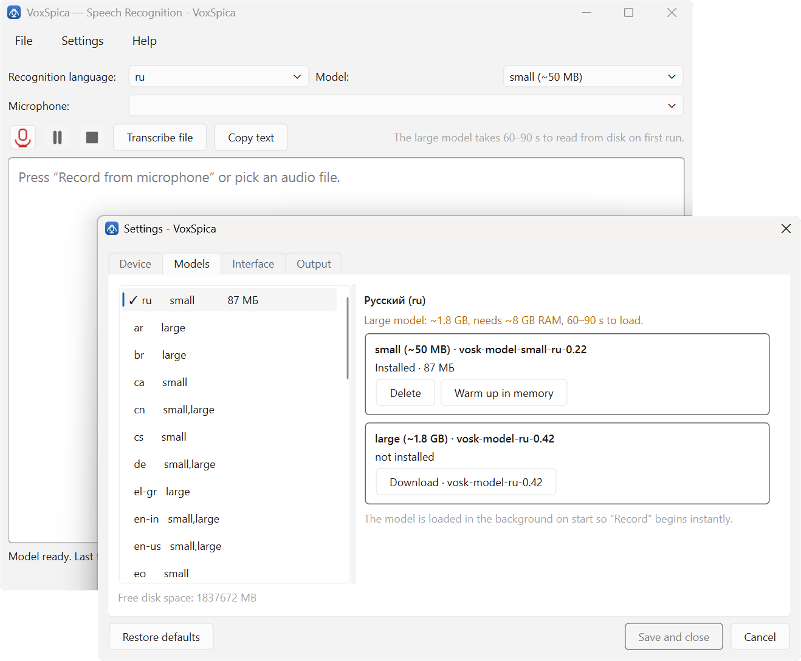
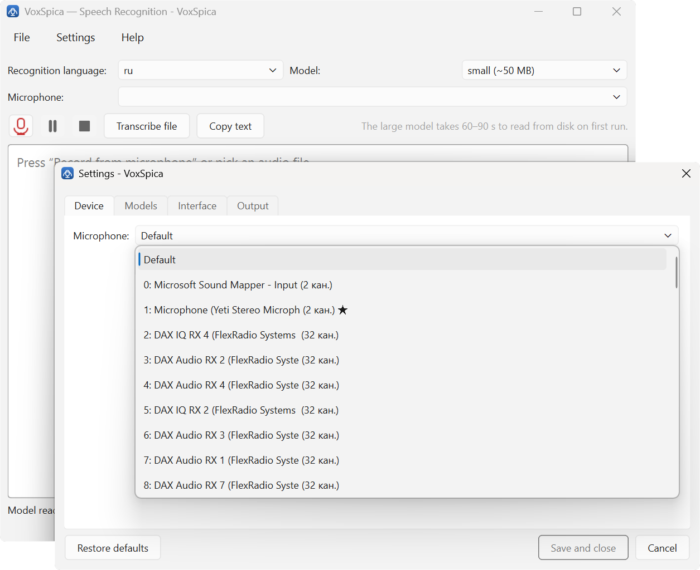
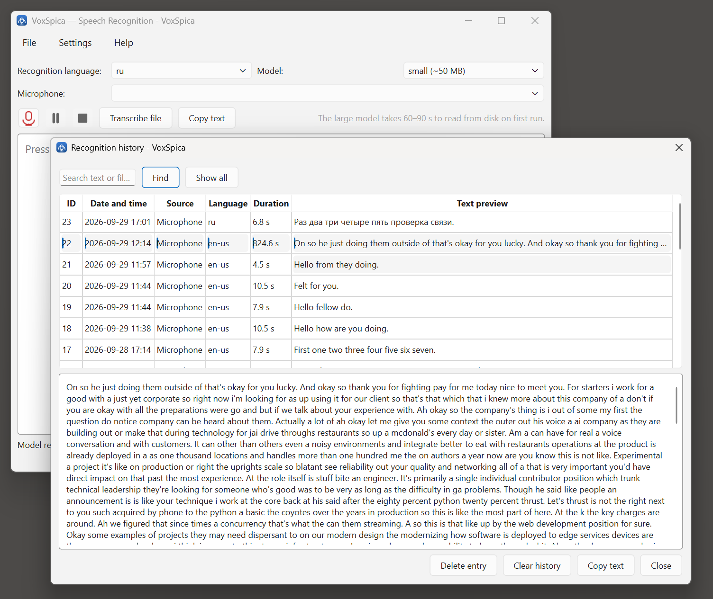
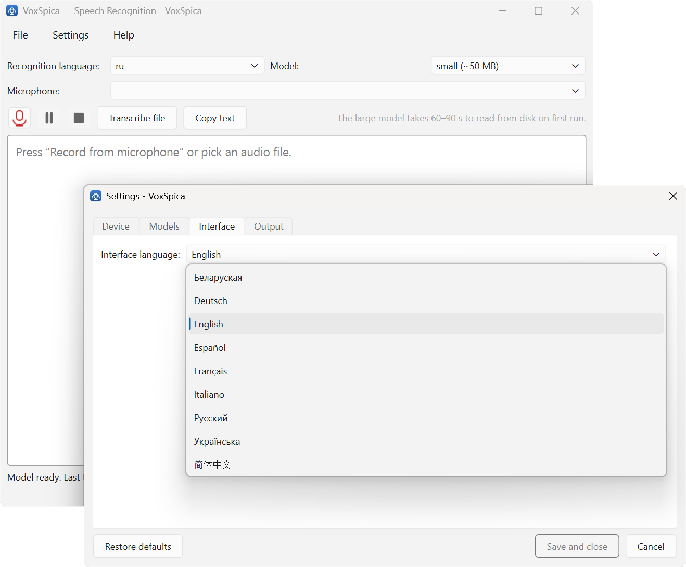

Your voice stays on your computer.
VoxSpica turns speech into text on Windows and sends nothing anywhere. Recognition runs on your CPU through VOSK, a desktop build of Kaldi. No account, no subscription, no cloud — the model is on your disk, the database is on your disk, and there is no code path that opens a socket.
- 33 recognition languages
- 9 interface languages
- 0 bytes uploaded
- 0 accounts
Two ways it works
Live dictation from a microphone, with the text appearing as you speak. And transcription of anything the system can play — wav natively, mp3, m4a and the rest with ffmpeg on the path. Every recognition is kept in a local database you can search.
The screens
Nothing here needs a manual. Four of them, in English.




Per-language installers
Seven installers, one per interface language. Each carries a ready recognition model, so the first launch works with no internet at all. Pick yours, untick the box when you have the file.

VoxSpica-0.1.5-en-setup.exe106.4 MB
VoxSpica-0.1.5-ru-setup.exe111.3 MB
VoxSpica-0.1.5-de-setup.exe111.3 MB
VoxSpica-0.1.5-fr-setup.exe107.6 MB
VoxSpica-0.1.5-es-setup.exe104.9 MB
VoxSpica-0.1.5-it-setup.exe114.7 MB
VoxSpica-0.1.5-zh-setup.exe109.1 MB
What it does not do
Written plainly, because this is the part usually discovered later.
- Not code-signedWindows shows a SmartScreen warning on every install. More info → Run anyway.
- No commasVOSK outputs words without punctuation. Capitalisation and sentence stops are restored; commas are not, because placing them without a syntax model produces worse results than none.
- Windows x64 onlyNo macOS and no Linux build.
- Models are separate50 MB to 1.8 GB, downloaded once. The per-language installers are the exception: each carries one.